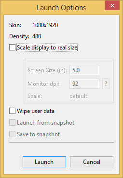

/* Моя кошка замечательно разбирается в программировании. Стоит мне объяснить проблему ей - и все становится ясно. */
John Robbins, Debugging Applications, Microsoft Press, 2000

/* Моя кошка замечательно разбирается в программировании. Стоит мне объяснить проблему ей - и все становится ясно. */
John Robbins, Debugging Applications, Microsoft Press, 2000
Android - бесплатная операционная система, основанная на Linux с интерфейсом программирования Java.
Android поддерживает 2D и 3D-графику, используя библиотеки OpenGL, а также хранение данных в базе данных SQLite.
Каждое Android-приложение запускается в своем собственном процессе. Поэтому приложение изолировано от других запущенных приложений, и неправильно работающее приложение не может беспрепятственно навредить другим приложениям.
Другими частями Android являются виджеты, или живые папки (Live Folders), или живые обои (Live Wallpapers). Живые папки отображают источник любых данных на «рабочем столе» без запуска соответствующих приложений.
Если у вас появилось желание разрабатывать приложения для телефонов под управлением Android, то вам необходимо тщательно подготовиться и установить весь необходимый инструментарий для работы.
За три года существования сайта с уроками я использовал Eclipse. Теперь все уроки будут переделываться под Android Studio. За год с мая 2013 по июнь 2014 студия прошла путь от версии 0.1 до 0.8. Скорее всего осенью мы увидим версию 1.0 вместе с новой версией Android L.
Важно понимать, что само приложение пишется на Java, а среда разработки выбирается по вкусу. То, что можно сделать на Android Studio, можно сделать и на Eclipse и в других редакторах. За три года я привык к Eclipse, но сейчас Гугл сосредоточился на развитии студии и там появляются очень удобные возможности для быстрой разработки под Android. Eclipse же является общей оболочкой и на ней можно программировать не только для Android, но и для других задач.
С другой стороны студия потребляет много памяти и у меня очень сильно тормозит. На данный момент написать приложение на студии у меня получается в 3-5 раз медленнее из-за этих тормозов. Выбор за вами.
Ещё одно замечание - студия часто обновляется, порой обновления бывают через пару дней. И интерфейс программ постоянно меняется. Я не в состоянии оперативно обновлять все скриншоты и описания на сайте. Постарайтесь разбираться самостоятельно.
Скачать пакет можно со страницы http://developer.android.com/sdk/installing/studio.html.
По умолчанию студия ставится в папку \Users\your_username\Appdata\Local\Android\android-studio (папка Appdata обычно скрытая). По крайней мере так было раньше. Я предпочитаю ставить на другой диск D: или в другое более удобное место.
Сама установка вроде проблем вызвать не должна. Но кроме самой среды разработки нужно установить Android SDK и другие дополнительные файлы. Возможно, у вас какой-то минимальный пакет установлен. Я три года уже не устанавливал программу с нуля и не могу точно показать, через какие шаги вам придётся пройти. В любом случае вам необходимо иногда запускать Android SDK Manager и проверять наличие новых версий SDK: Tools | Android | SDK Manager:
Со временем вы сами разберётесь, что вам нужно ставить, а что не обязательно. На первых порах соглашайтесь на те условия, которые вам предложит менеджер.
Пользователь из Болгарии написал, что в Win64 требуются права администратора при установке или обновлении. Имейте в виду.
Для отладки приложений используется эмулятор телефона - виртуальная машина, на которой будет запускаться наше приложение. Также можно использовать и реальное устройство.
Чтобы создать эмулятор телефона, выбираем в меню Tools | Android | AVD Manager. Появится диалоговое окно мастера. Нажимаем кнопку Create..., в новом окне вводим любое понятное имя, например, Android4. Из выпадающего списка Device можете выбрать устройство, наиболее подходящее для ваших опытов, например, можно выбрать стандартный смартфон Nexus S. Выбираем нужную версию Android для поля Target. В поле CPU/ABI выбираем тип процессора, если доступно. В поле Skin выбираем подходящий вариант для внешнего вида устройства.
При необходимости можно создать эмуляторы для каждой версии ОС и проверять программу на работоспособность. Остальные настройки можно оставить без изменений. Вы всегда можете вернуться к настройкам и отредактировать снова. Часто рекомендуют использовать опцию Use Host GPU, чтобы задействовать возможности графического процессора. Это даёт прирост скорости эмулятора. Нажимаем кнопку OK.
Если вы создали несколько эмуляторов, то выделите нужный и нажмите кнопку Start для запуска эмулятора.

Помните, что виртуальные машины по умолчанию сохраняются в папке пользователя, и пути к папке не должны содержать русские символы во избежание проблем.
Если вы всё же попались в эту ловушку, то дам ссылку по смене папки пользователя на английский: (спасибо читателю Евгению Степанову за подсказку). Также можно подправить ini-файл и прописать путь к виртуальному устройству таким образом, чтобы в пути не встречались русские буквы (соответственно, сам файл *.avd также нужно переместить в другое место).
В зависимости от мощности компьютера нужно немного подождать, чтобы сначала загрузился эмулятор. Эмулятор от Intel загружается на порядок быстрее, но его установка немного сложнее. Информацию можно поискать у них на сайте.
Когда вы настроите эмулятор, то не обязательно его загружать описанным способом. Он будет запускаться автоматически, когда вы будете запускать само приложение.
К сожалению, очень часто бывает так, что при первом запуске эмулятор загружается, а приложение в нём не запускается. Это происходит от того, что во время загрузки эмулятора ваш компьютер теряет связь с ним. В этом случае вам нужно перезагрузить сервисы. Это можно сделать различными способами - через диспетчер задач, с помощью командной строки и даже в самой Студии. Вот как я делаю через Студию. Через меню Tools | Android | Monitor (DDMS included) запускаем окно Android Debug Monitor. В этом окне есть маленький треугольник, направленный вниз. Нажимаем на него и выбираем пункт reset adb.
Иногда помогает повторный запуск приложения. Если эмулятор не потерял связь с компьютером, то при повторной попытке приложение загрузится без проблем. Повторяю, что эта проблема возникает при первой загрузке эмулятора. Далее, во время работы не закрывайте эмулятор.
Последнюю версию документации всегда можно найти по адресу . Если у вас возникли проблемы с интернетом, то в подпапке /docs в вашей папке установленной Android SDK можно найти ее локальную копию (если вы не отказывались от её установки).
Данный пункт не является обязательным, но как показывает практика, наличие кота позволяет добиться быстрых результатов в изучении Android. Кота можно подобрать на улице, взять из приюта, купить по объявлению. Подойдут всякие - рыжие, полосатые, чёрные. Кота следует помыть, накормить и посадить рядом. Ваша карма в это время растёт и процесс освоения материала пойдёт быстрее.

Подготовка к разработке завершена. Теперь следующий этап — создание первого приложения.
Устраивайтесь поудобнее в кресле и пристегните ремни - нас ждёт увлекательное путешествие в мир разработки приложений под Android.
фитодизайн ; омоложение после процедуры ; структура жд транспорта ; компьютерный стол нсс ; ресторан лагуна меню, la .; зайко патологическая физиология ; возврат строительных материалов, tytan .; красивые комнаты спальни ; кипр туры корал тревел, мень .; рак головного мозга первые симптомы, эко .